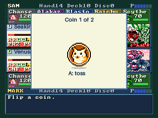
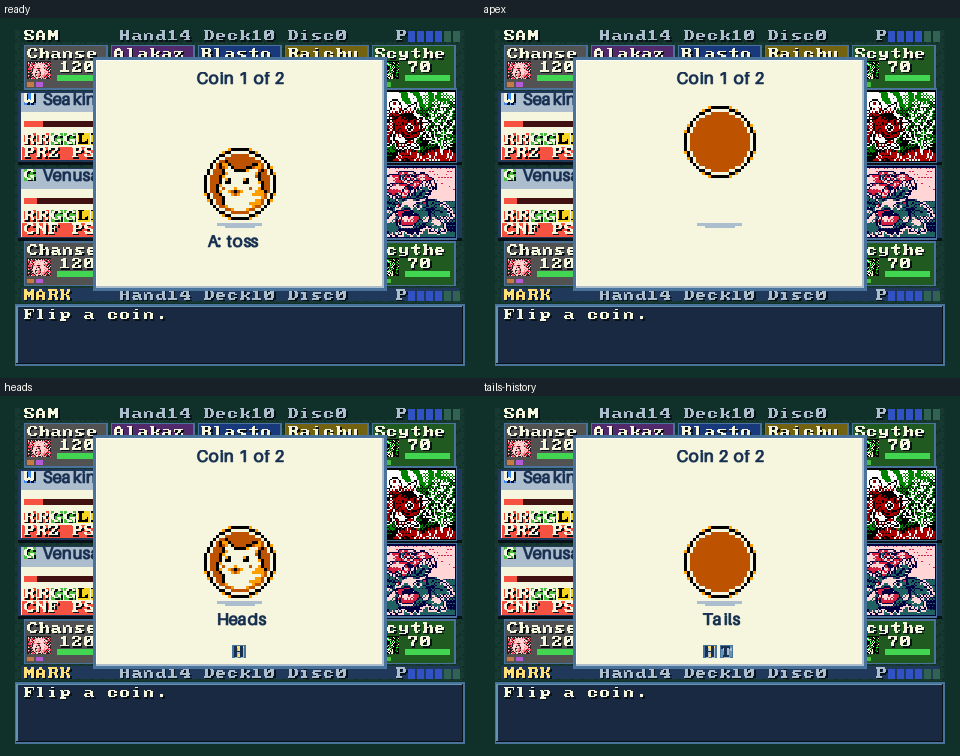
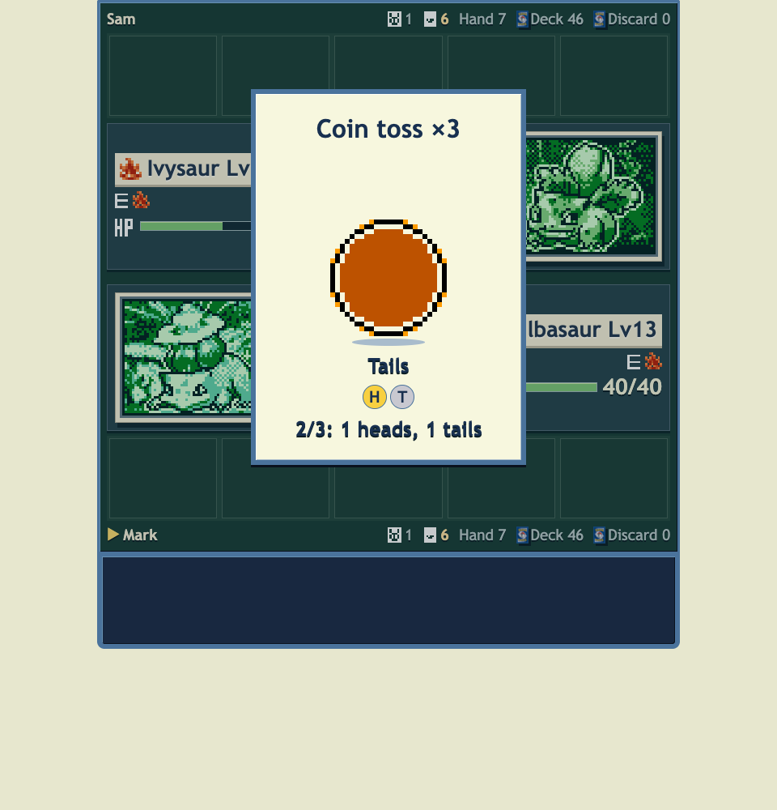

Coin toss
The original Pikachu coin now flips through an arc, lands with a bounce and reveals the engine’s actual result. Single and multiple tosses keep their original order and sounds.
Animation settings and controller ownership are preserved. A skip finishes the animation without answering the following prompt.
The GIF previews actual completed N64 framebuffers before VI filtering, with palette reduction for the animation. Full-color source frames and browser captures are linked below.

320 × 240 native animation preview
480 × 360 native sequence
Browser result and ordered coin history